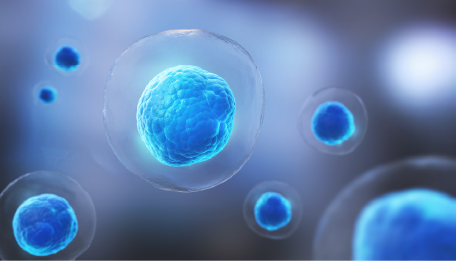
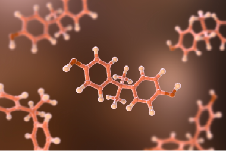
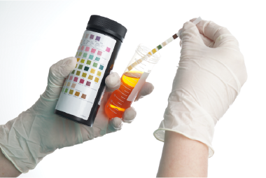
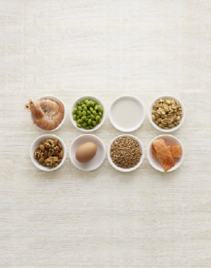

RESET CLINIC 기능의학
항산화력 / 산화스트레스 검사
활성산소는 각종 세포의 대사과정에서 발생하는 부식물이며 과잉 생성 시 세포와 단백질이 손상됩니다.
[ 측정항목 ]
활성산소로 인한 세포 손상도
과잉활성산소 제거 능력 (항산화력)

NK세포활성도 & 면역력 검사
NK세포는 면역 세포 중 유일하게 직접 비정상 세포를 찾아내어 파괴하는 역할을 하는 중요한 면역 세포입니다.
[ 측정항목 ]
혈액 검사
NK 세포 활성도
장내 미생물 검사
장내 유익균-유해균의 균형도 및 장내 미생물의 다양성을 확인하여 염증 위험도를 평가합니다.
[ 측정항목 ]
소량의 분변 검사
유익균, 유해균 검사

호르몬 검사
다양한 호르몬의 수치를 파악할 수 있는 기초적인 검사입니다.
[ 측정항목 ]
금식 후 채취한 혈액
호르몬 분비 상태

소변 유기산 검사
대사의 균형 상태와 장내의 세균 증식 상태를 평가할 수 있는 유일한 검사입니다.
[ 측정항목 ]
미세영양결핍상태
독성물질상태

음식 항원 알레르기 검사 (IgG)
알레르기를 일으킬 수 있는 IgG 항체를 측정하며, 소량의 혈액만으로도 알레르기를 일으키는 원인 파악이 가능합니다.
[ 측정항목 ]
소량의 혈액
알러지 원인 음식